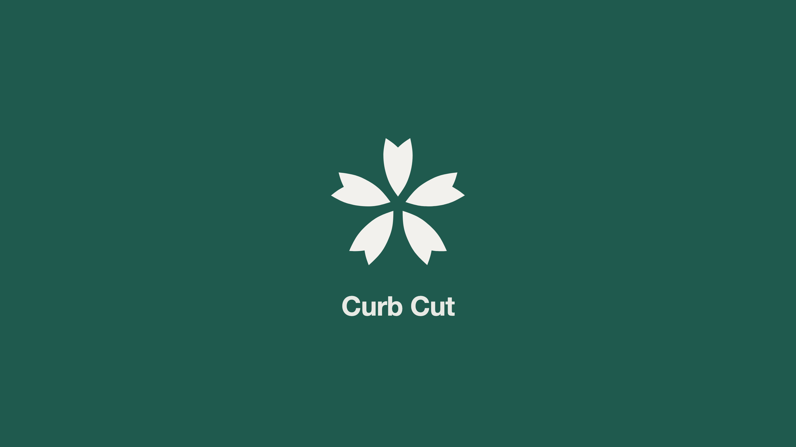
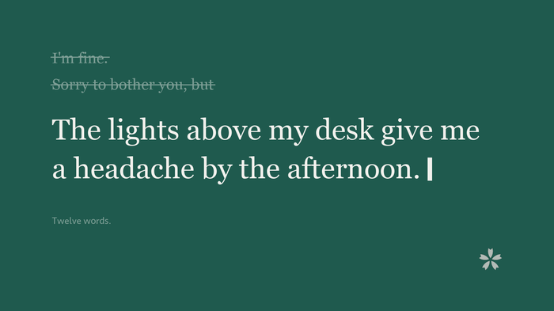
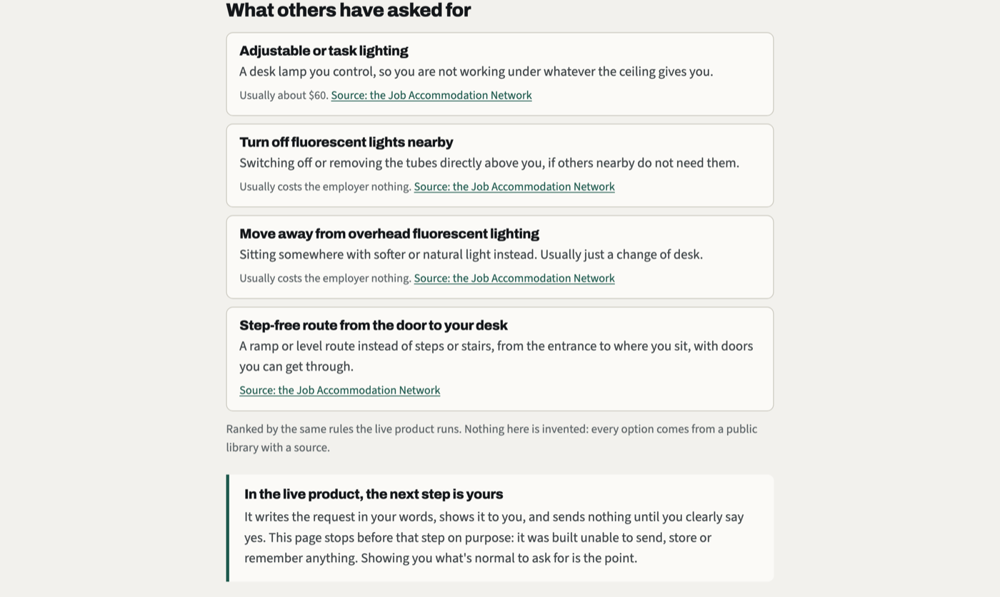
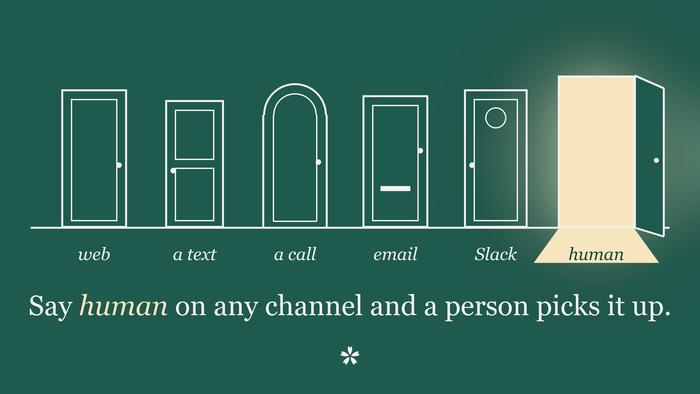
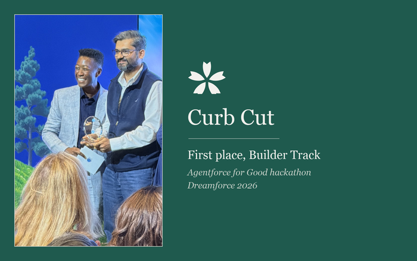
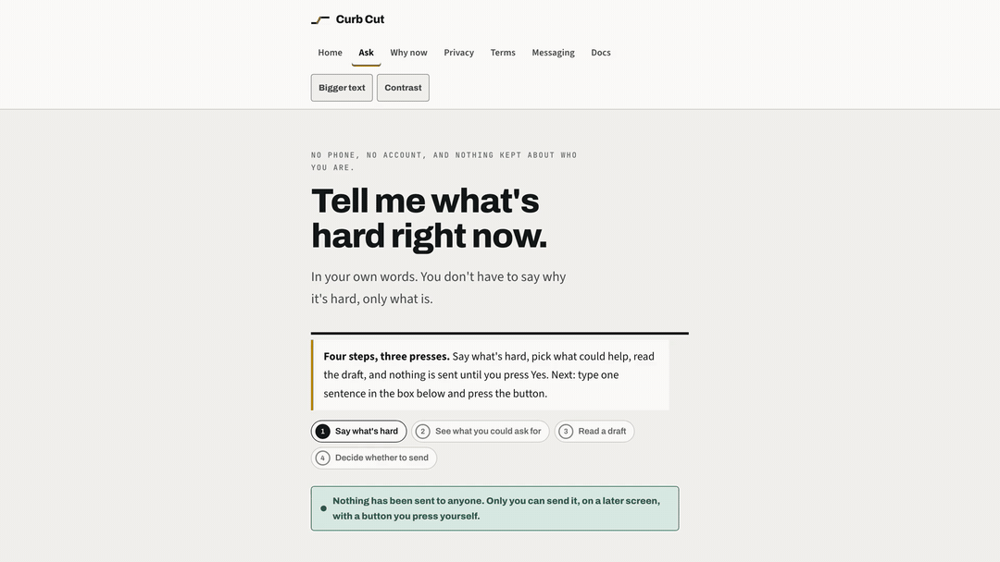
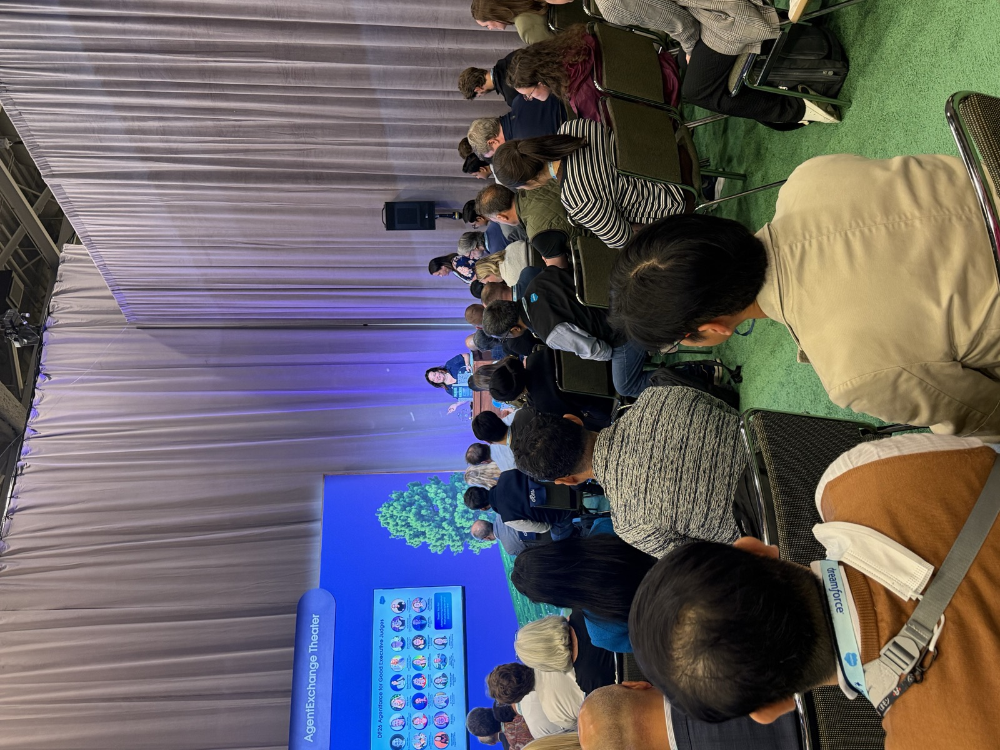

In September I spent five days at Dreamforce 2026 in San Francisco. I went as a speaker, to teach a session called How Agentforce Helped a Nonprofit Do Good, about a multi-agent build for a food rescue nonprofit. Along the way, kind people from the Agentforce for Good program nudged me to build something for their hackathon as well. I'm thankful for that nudge: Curb Cut ✿ grew out of it. The week also left me with a sidewalk I still think about.
Every morning I walked the same blocks to Moscone Center. Inside, the future: agents, keynotes, demo floors the size of villages, the word intelligence on every wall. Outside, on the same block, a man slept in a doorway with everything he owned beside him. The crowd flowed around him like water around a stone, and I flowed with it, and the doors closed behind us, and the future resumed.
Two worlds, one sidewalk. And the week kept teaching me the same lesson about the border between them: it's a staircase, and the steps are small.
What you see on a street is the last symptom of a long chain. Behind a person sleeping outside there's pain that never got named, support that didn't come at the one moment it would have mattered, a choice someone couldn't unmake, or someone else's cruelty they couldn't deflect.
People arrive on a sidewalk the way anyone arrives anywhere: one unanswered ask at a time.
I couldn't do anything about that street.
This is not a story about a tech worker fixing homelessness with an app. It's a story about recognizing a shape.
The tool I'd brought for the hackathon was built against the smallest, earliest version of the same chain: the moment a person needs something, and asking feels more expensive than enduring, so they don't ask, and the chain gets its first link.
The lamp
Let me make that first link concrete. A sixty-dollar lamp can end a year of headaches. So why would anyone sit under lights that hurt for a year? Because of what the lamp costs to ask for. "The lights above my desk give me a headache by the afternoon." Saying that to a manager. Backing it up with proof. Explaining your body to the person who decides your career. The lamp costs sixty dollars once. The sentence costs courage every time, and while it stays unsaid, the headache stays too.

The numbers say this is nobody's private weakness. More than one in four adults has a disability. At a typical large employer, the share of staff who have told their employer about one is 3.5 percent. And of the accommodations employers described to the Job Accommodation Network, 61 of every 100 cost the employer nothing at all. More often than not, money isn't the barrier; the asking is, and for the people the whole process is meant to serve, the asking is itself inaccessible.
At home, you say what's hard once and someone is already up and helping. At work, the same ask turns into forms and proof, and many people choose silence instead. Curb Cut ✿ is one bet, made carefully: the care we know from home can live at work too.
What it does, in one paragraph
You say what's hard, in your own words. One sentence is enough. Curb Cut shows you what other people have asked for in situations like yours, with what each usually costs and a public source on every option. If you want to ask, it writes the request in your words, shows you every word, and sends nothing until you clearly say yes. On the other side, a person answers. That's the whole product. Everything else is making sure those promises can't quietly break.
The rules I wrote before the code
I build on Salesforce for a living, and I've read too many pages that assert things. So before the features, I wrote rules, and I taught the build to fail whenever a rule breaks. There are 521 of those checks now. They run in about a second, on every push, and most of them exist because the thing they forbid actually went wrong once.
The first rule: there will be no diagnosis field. Not hidden, not encrypted. Absent. A field that doesn't exist can't be leaked, shown to a manager, or subpoenaed. One check scans every object for any field named after a medical concept and fails the build if it ever finds one. Ask the person on the other side what someone has, and the honest answer is that nobody knows and nobody can find out.
The second rule: the AI talks, the code decides. An Agentforce agent holds the conversation, because conversation is what AI is genuinely good at. But what gets stored and sent is decided by deterministic Apex, not by a model's mood. The agent can't invent an accommodation: everything it names comes from a small library where every row carries a public source, and when nothing matches it says it doesn't have good information, rather than guessing. For this population a confident wrong answer isn't a harmless miss. It can cost somebody their one ask.

The third rule: nothing sends without a clear yes. The draft appears in full, in the person's own words, under a heading that says nothing has been sent and only you can send it. A hedged yes is not a yes. There's an adversarial test where someone answers vaguely and the system must hold still, alongside tests for prompt injection, a manager demanding a roster, and a diagnosis volunteered mid-chat that the system must decline to keep.
The fourth rule came from imagining a ringtone. The voice line answers when called and never calls back, because a phone ringing at the wrong moment can expose the one act of courage a person managed that week. Whether anyone ever knows they asked stays entirely in their hands.
And the last rule: every door ends at a human. Say human on any channel and a person picks it up, from a queue ordered by who has waited longest.
The doors
The web door needs no login, no account, no name. But the people this serves most often have no company login at all: the crew in the field, the cleaner on the early shift, the contractor on the road. For them Curb Cut is a text message, or a phone call from the most basic phone there is, and the number can live on a poster in the break room. There's an email door, a Slack door that starts by telling the truth about what workspace owners can export, and tools that let any AI assistant look things up. None of those tools can send. A tool that was never given a send button can't be talked into pressing one.

If you want to feel why the doors matter, imagine your glasses broke at lunch. By two o'clock the spreadsheet is fog and every email is a guess. Then you go looking for help and find where the form lives.
The form that could help is on the screen you can't read.
For millions of people it's like this every day. So Curb Cut answers a phone, and the fog stops mattering.
The stage
Near the end of the week, Curb Cut won first place in the Builder Track of the Agentforce for Good hackathon. The program ran on volunteers from all sixteen Salesforce Equality Groups, drew forty-three projects from eleven countries, and its twenty-two judges gave every project real attention. I'm grateful. I'm more grateful for a criticism: the judges said it was hard to tell what was live product and what was presentation. That sentence rebuilt everything since. Every film now wears a LIVE badge on real footage and a CONTEXT badge on anything staged, and there's a page where you don't have to trust footage at all. You type one sentence in your browser and the product's own ranking engine answers, with no server behind it, and nothing you type leaves the page. The build fails if anyone ever adds a network call there.

One sentence, the film. Captions are built in, and it works with the sound off.

The week kept turning in my head after I flew home. There are parallel worlds around us, and parallel worlds within us. They run along sidewalks, and they run through office floors: the colleague who presents confidently at ten o'clock is sometimes the same person rehearsing an unsaid sentence at noon. The outside is the symptom. Behind it, always, a chain of small unanswered asks.
The mango tree
On the Showdown stage, every Builder finalist got the same question, with sixty seconds to answer: "What did you build that you didn't think was possible thirty days ago?" I gave the only answer I had: thirty days earlier I didn't think one person could build something a stranger might trust with the hardest sentence of their week. Something my favourite fruit taught me long ago explains how that became possible. Mangoes take years: you plant the tree, water it, pull the weeds, and care for it season after season, and one day there's more fruit than one family can eat. Most of the building went into the soil: the rules above, and the tests that keep them true. The features grew out of that.
One shape, many doors
Here's the part I'd most like nonprofits to hear, because nonprofits carry the least budget and serve the most people who find asking hard. Under the workplace words, Curb Cut is a pattern: someone says what's hard in their own words, from any phone, sees real options with sources, sends nothing without a clear yes, and always reaches a human. Swap the option library and the same machinery fits a food bank's request line, a shelter's intake, a school's parent door. That isn't a guess: the session I went there to teach was a forty-minute walk through a multi-agent food rescue system built on the same philosophy, guardrails first as code, one record carrying the state, a person approving. Different library, same shape. The chain I watched on that sidewalk is made of unanswered asks, and every ask answered early is a link that never gets forged. If you serve people who find asking hard and want a version shaped for them, write to me and I'll help you shape it, pro bono. If your cause needs hands more than software, I'll volunteer mine. Let's make it happen.
What it asks of you
Curb Cut is free, open source under Apache 2.0, and installs into the Salesforce system an organisation already runs, so everything it stores stays under your own roof. The install guide is one page. What it truly needs is one volunteer willing to be the person on the other end. Technical skill is secondary. If only one thing can be asked of an organisation, it's willingness. And when you're live, tell me: workplaces where somebody answers get named, with permission, and every name makes the next organisation braver.
There's one more door, and I keep it propped open on purpose. A thing like this can end as a shiny trophy, a win that gets framed and then forgotten, and that would be the real shame: it was built to be used. So:
- Try it. Experiment with it.
- Break it and tell me where it broke. So many of the 521 checks were born exactly that way.
- Tell me what felt wrong as freely as what felt right.
- If you can build this into something greater than I can alone: take it, name it better, make it your own, with my blessing as well as the license.
- Or grow it with me.
And if you see a possibility here I haven't, reach out.
This door ends at a human too.
One honest thing before the links. Curb Cut is tended the way the mango tree is: by hand, season after season, with nothing to sell. That's what keeps it free, and what keeps every promise in it a promise made to you. It also means the only way this reaches the people it was built for is a person like you passing it along. If it reached you, your hand is the amplifier: a comment, a share, a note to someone whose workplace needs it, a hard question, an issue on the repository. From where I stand, that kind of help is worth a million. And if I can ever help you back, ask.
The name comes from the sidewalk ramps wheelchair users fought for. They were built for a few people, and now everyone rolls through them: parents with strollers, travellers with suitcases, delivery workers with carts. I noticed, that week in San Francisco, that the ramps are cut into the same sidewalks people sleep on. Both things are true at once. Build for the people who get left out, and it gets better for everyone. Leave the asking expensive, and the chain keeps its links.
Feel it in your browser: the try page. Nothing you type leaves the page.
Everything else: the Curb Cut home. The code: github.com/parthsevak2/curb-cut.
For the builders who want to go deeper, four doors in:
- How it all fits together
- The technical design, including the MCP layer that lets AI assistants look things up
- How each door is wired, Twilio voice and text to the agent
- The agent's instructions and interfaces, guardrails first
For questions, access needs, or a version for the people you serve, my channels are open. No message is too small.
I don't think AI for good is a category of project. Either what we build is good for the people it touches, or it isn't.
